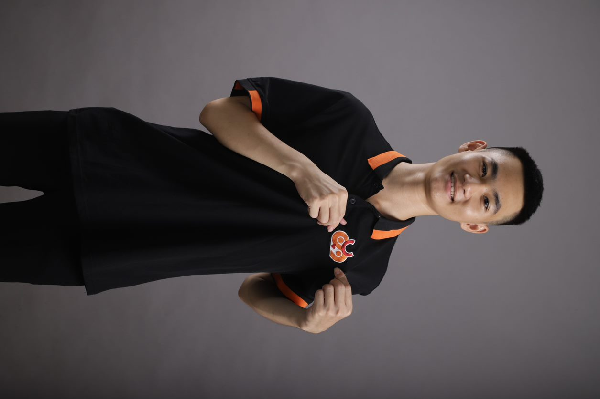
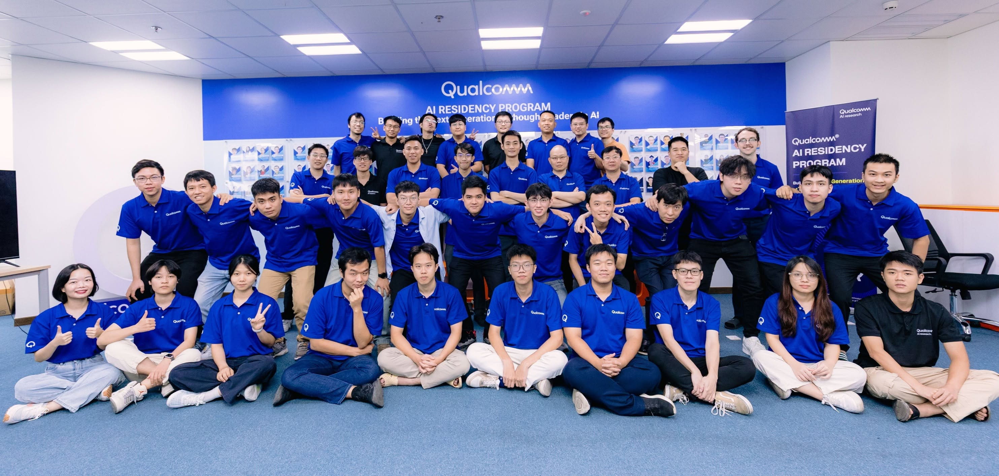
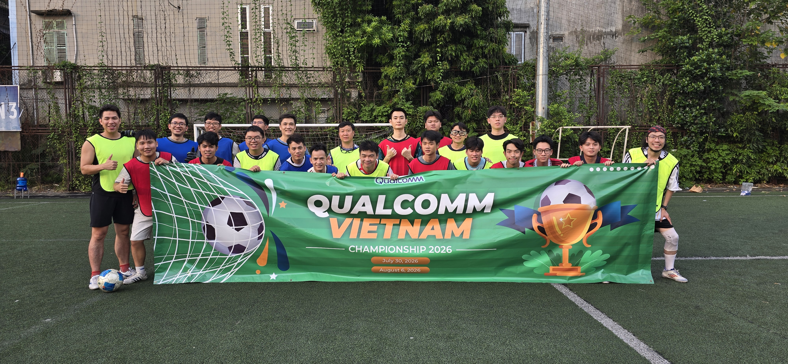
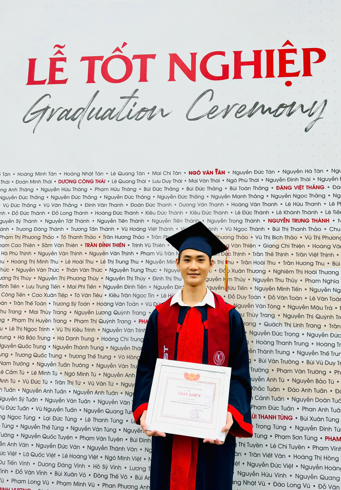
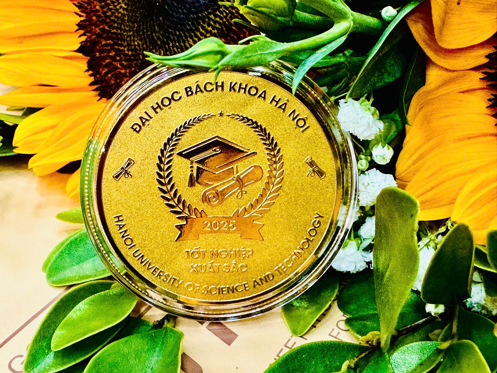
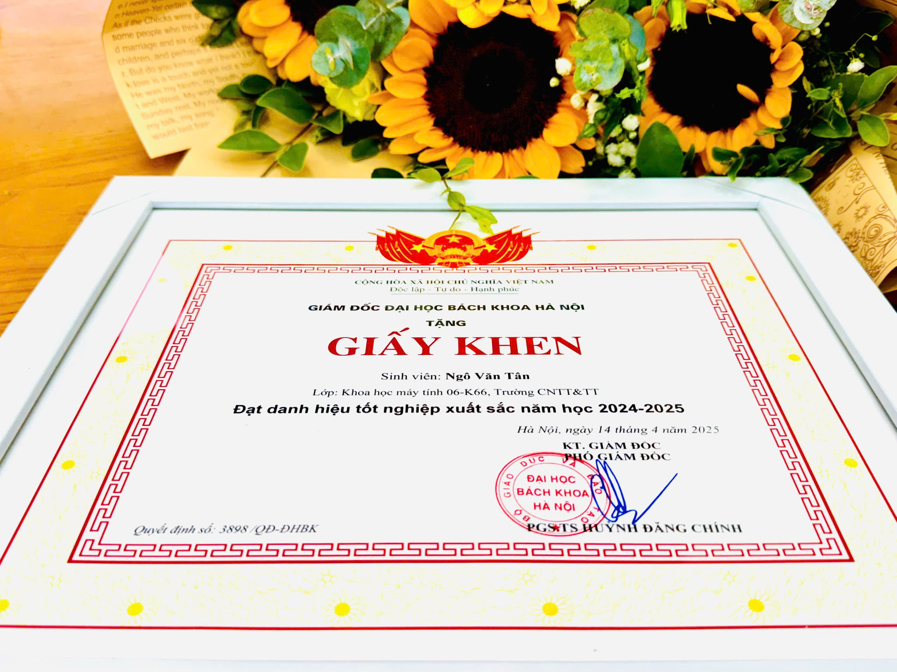

Hanoi University of Science and Technology (HUST)
B.Sc. in Computer Science · GPA 3.69 / 4.0 · Hanoi, Vietnam
- Graduated early in 3.5 years — one of 9 Excellent Students of the class out of ~3,000 (Director's Certificate of Merit).

AI Research Resident at Qualcomm AI Research
B.Sc. in Computer Science, Hanoi University of Science and Technology
"Connecting the dots..." — Steve Jobs
I am an AI Research Resident on the Computer Vision team at Qualcomm AI Research, working on distilling Image-Generation models and building controllable Video Diffusion Models, World Models, including using them to generate training data for Robot Learning.
My interest sits at the boundary between model design and ML systems — understanding AI end-to-end, from the learning dynamics of generative models down to the GPU kernels that run them. I am passionate about efficient ML, parallel and distributed computing, and ML systems: measuring rather than guessing, finding where performance is quietly lost, and co-designing models with their execution so efficiency is built in, not bolted on.
My favourite courses: Stanford CS336 · Karpathy's Zero to Hero · tinytorch · micrograd · GPU-MODE.
I am applying to PhD programs — I would be grateful for the chance to pursue this direction.
I began my research career in Batch 13 of the Qualcomm AI Residency Program, working on generative AI alongside a talented cohort. Beyond the research, it is a structured apprenticeship: Qualcomm scientists teach us the foundations directly — machine learning, linear algebra, statistics, and probability — so the practical work rests on solid theory.


B.Sc. in Computer Science · GPA 3.69 / 4.0 · Hanoi, Vietnam
Specialized Mathematics Program · Vietnam
I gave the class graduation speech — a heartfelt tribute to our parents, teachers, and the years that shaped us. It struck a chord far beyond the hall, moving many to tears and drawing over 10 million views across Facebook, YouTube, and TikTok.
Video not loading? Watch the speech on Facebook.
In the press: “Fulfilling my parents' dream of an education” — coverage of the speech (Vietnam.vn).


